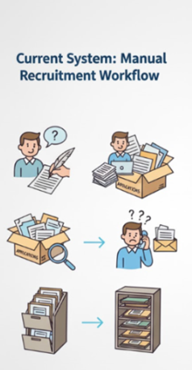
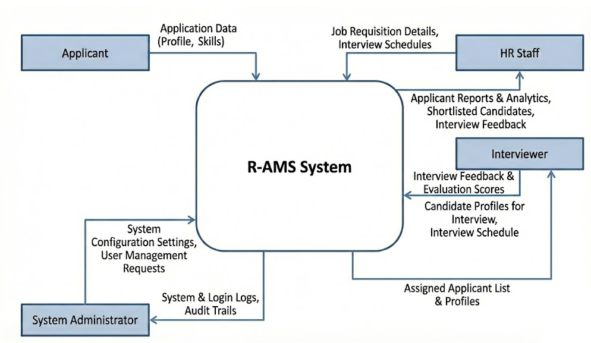
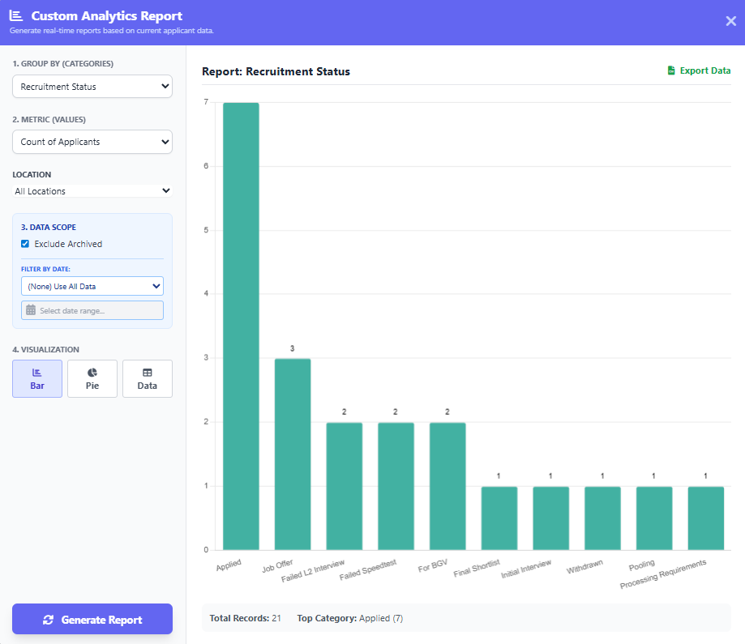

Development of a Web-Based Recruitment and Applicant Management System (R-AMS)
A centralized digital hub designed to replace manual data handling with a secure, automated workflow for XBP Global Company.
The Problem: Manual Workflows
- Recruitment often relies on manual, spreadsheet-based methods.
- Data is scattered across multiple Excel and Google Sheets files managed by different staff members, leading to inconsistent data entry.
- Paper application forms require tedious manual re-encoding.
- This fragmented process leads to duplicate records and significant delays in scheduling interviews.
- HR managers struggle to track real-time performance or generate the reports needed to make efficient hiring decisions.

Figure 1. Current manual systemThe Solution: Three-Tier Architecture
R-AMS is designed to solve these bottlenecks by providing a robust Three-Tier system:
Tier 1
Applicant Web Form
Candidates submit data digitally, and an automated pre-screening algorithm calculates qualification scores.
Tier 2
HR Dashboard
A centralized command center to manage records, perform bulk CSV uploads, and track real-time analytics.
Tier 3
Interviewer Portal
A restricted space for department heads to review assigned candidates and submit standardized feedback.

System Architecture DiagramStrategic Impact & Value

Watch Demo
Success is something of which we all want more.
R-AMS Overview
Click thumbnail to play presentation video
- R-AMS transforms digital HR operations beyond simple digitization.
- By adopting real-time metrics, it enhances HR teams' ability to allocate resources, manage applicant volume, and evaluate recruiter productivity.
- It reduces human error and accelerates the hiring pipeline, providing immediate insight for evidence-based recruitment decisions.